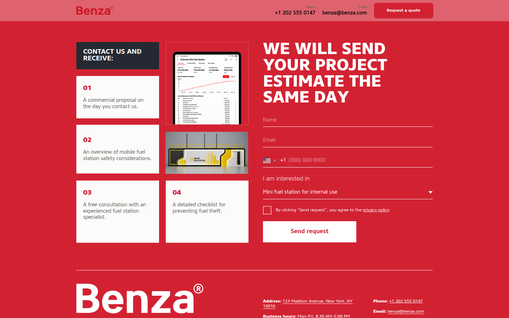
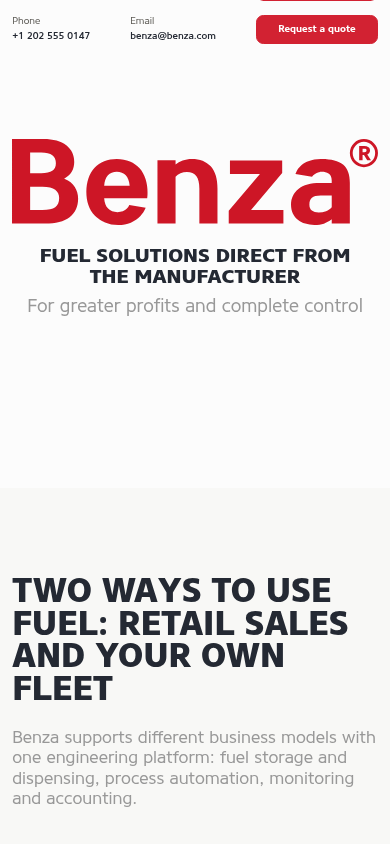

01
Separate the two main use cases
The website presents solutions for fuel retail and in-house fleets side by side, helping visitors start with what matters to their business.
How do you explain complex equipment so a business can quickly see its value? The website guides visitors from their business needs and station selection to requesting a quote.
Explore the websiteBusinesses choose fuel stations based on their operations, working conditions and requirements. The website needs to clarify the options, show their value and guide visitors toward requesting a quote.
Rather than starting with a long list of specifications, the page answers questions buyers ask before contacting the manufacturer.
Fuel retail and an in-house fleet have different requirements.
Buyers need to compare fixed stations, fuel modules and trailers without searching through a large catalog.
Manufacturing quality, documentation and fuel monitoring matter when selecting equipment.
After exploring the options, visitors need a clear way to request a quote.
I structured the page as a conversation: why does the business need a station, where will it operate, what are the options and how can the buyer get a quote?
These diagrams were reconstructed from the finished page to illustrate the content structure.
A complex product becomes easier to understand when buyers first recognize their own needs, then compare the equipment.
Each section answers a specific question and prepares visitors for the next step.
The website presents solutions for fuel retail and in-house fleets side by side, helping visitors start with what matters to their business.
Mining, agriculture, fleet operations and fuel retail each have a dedicated tab with relevant needs and use cases.
Cards with images and short descriptions help buyers compare station types and prepare for a conversation with a specialist.
Manufacturing, documentation, experience and automation are presented together, showing visitors the expertise behind the product.
The form explains the next step: request a quote and consultation. Visitors can select the type of station they are interested in.
Sections and tabs adapt to smaller screens, making it easy to explore the offer and contact the company on any device.
A palette of red, charcoal and white, bold typography and equipment imagery give the complex product a clear and recognizable presentation.
A prominent brand name and concise statement make it clear who the company is and what it offers.

Fuel retail and in-house refueling appear side by side. Contrasting cards help visitors recognize their situation and understand where to start.

Tabs connect station capabilities to the practical needs of mining companies, agriculture, fleet operators and fuel retailers.

Images and brief descriptions make retail station formats easier to compare. A separate option introduces custom projects for more specific requirements.

The business range is organized into cards, allowing visitors to see the equipment and quickly understand the purpose of each model.


Manufacturing and automation details help build confidence, while the form explains what buyers will receive when they get in touch.


On smaller screens, content follows a clear sequence, with industry selection and the path to an inquiry still easy to reach.
The result is a website that connects business needs to specific equipment options and guides buyers toward requesting a quote.
Help businesses understand complex equipment and identify the right direction.
Use cases, industry tabs, visual product cards and a clear contact form.
Visitors can identify their needs and contact the manufacturer with a clearer brief.
We needed a website that would help customers understand a complex product and find the fuel solution that fits their business.
Maksim created a clear structure: he separated the use cases, showed the needs of different industries and presented the equipment in a way that makes comparison easier.
Special attention went into guiding visitors from their first introduction to the product to requesting a quote. The resulting website feels cohesive, easy to use and recognizable.
Buyers do not need to understand every specification on the first screen. They need to recognize their own challenge and know where to go next.
When industry use cases, equipment options and the next step are connected, the website becomes a useful starting point for a conversation.

I’ll review your website and share three ideas to help customers understand your offer more quickly.
Maksim KotsarUI/UX designer